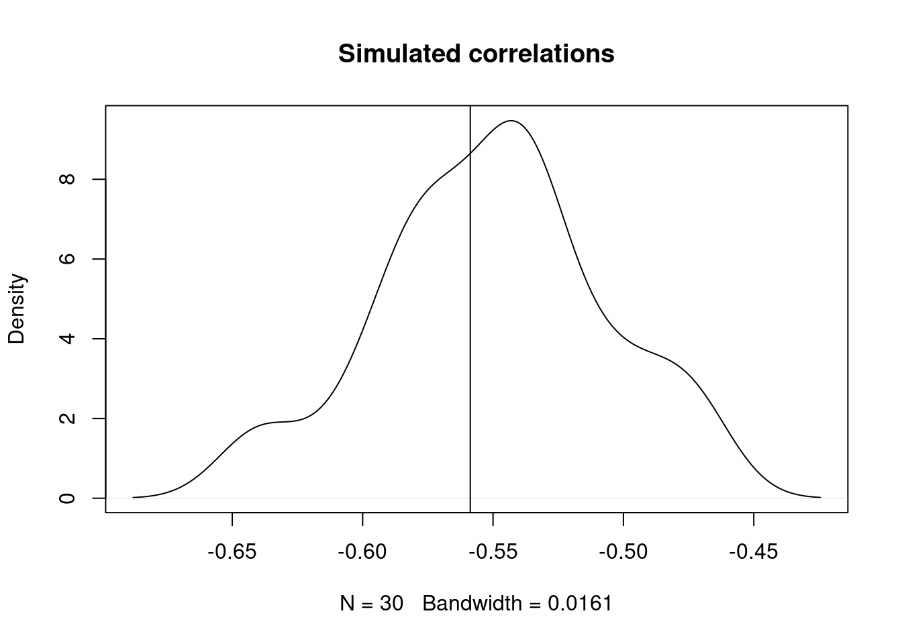
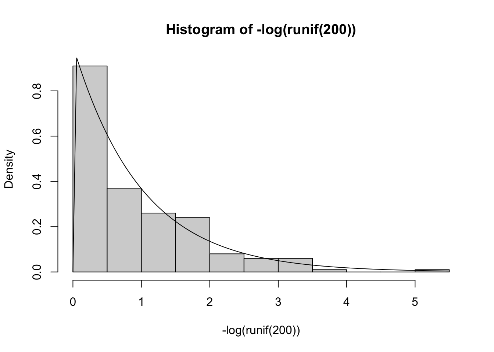
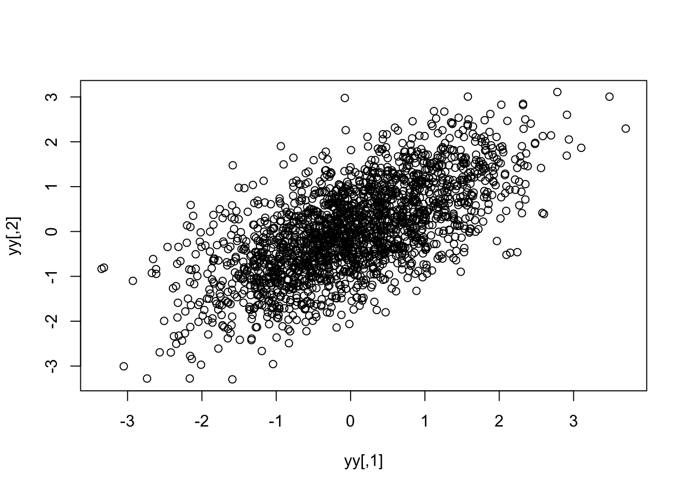
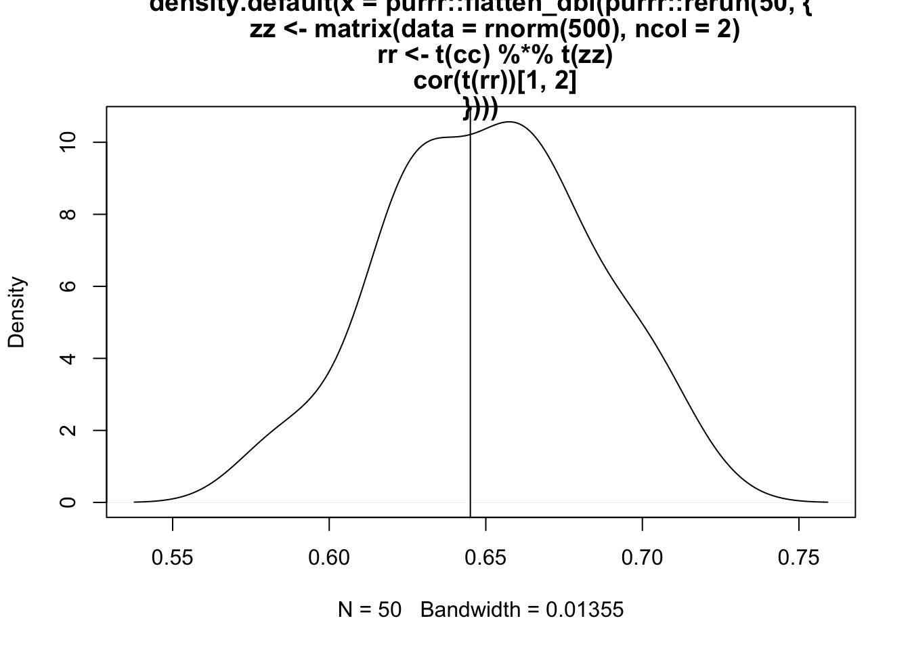

library(targets)
library(ggplot2)
library(tidyverse)
library(tidybayes)code
plot(density(tan(runif(5000,min = 0, max = pi/2))*.3, from = 0),
xlim = c(0, 100))
curve(dexp(x, rate = 3), add = TRUE, col = "red", xlim = c(0, 100))
curve(tan(x), xlim = c(-5,5))hist(-log(runif(200)), probability = TRUE)
curve(dexp(x), add = TRUE)
eg <- rethinking::rlkjcorr(1, 2, 1)
cc <- chol(eg)
purrr::rerun(30,{
zz <- matrix(data = rnorm(500), ncol = 2)
# plot(zz)
rr <- t(cc) %*% t(zz)
# plot(t(rr))
cor(t(rr))[1,2]
}) |>
purrr::flatten_dbl() |> density() |> plot()
abline(v=eg[1,2])#' modelling the plasticity slopes (xik - xbar) for each evironmental variable?
#' what's correlated here? slopes and intercepts
eg <- rethinking::rlkjcorr(1, 2, 5)
cc <- chol(eg)
mm <- matrix(rnorm(4000, mean = 0, sd = 1), ncol = 2)
plot(mm)yy <- t(t(cc) %*% t(mm))
plot(yy)
cor(yy) [,1] [,2]
[1,] 1.0000000 0.5166999
[2,] 0.5166999 1.0000000purrr::rerun(50,{
zz <- matrix(data = rnorm(500), ncol = 2)
# plot(zz)
rr <- t(cc) %*% t(zz)
# plot(t(rr))
cor(t(rr))[1,2]
}) |>
purrr::flatten_dbl() |> density() |> plot()
abline(v=eg[1,2])
p <- -.8
L <- matrix(c(1,0, p, sqrt(1 - p^2)), ncol = 2, byrow = TRUE)
zz <- matrix(data = rnorm(1000), ncol = 2)
yy <- t(L %*% t(zz))
plot(yy)cor(yy) [,1] [,2]
[1,] 1.0000000 -0.8066968
[2,] -0.8066968 1.0000000